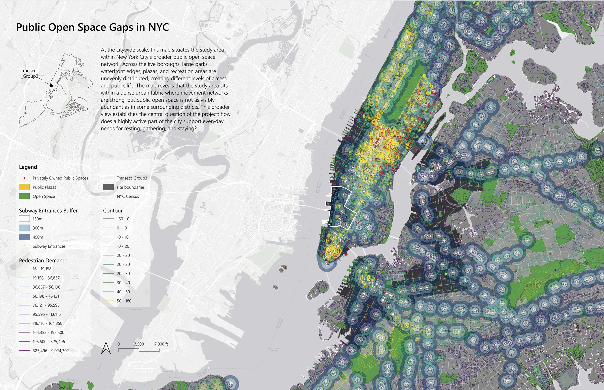
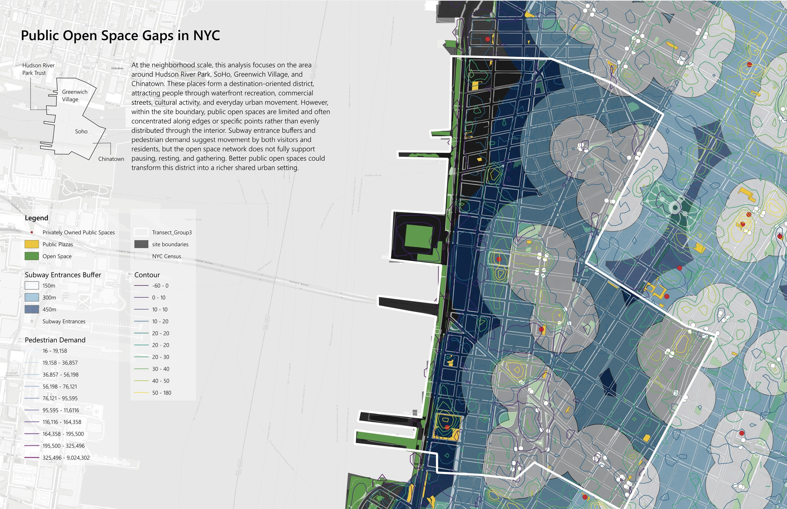

DTEQ 01 · GIS ANALYSIS
Public Open Space
Gaps in NYC
This GIS-based study examines uneven access to public open space across New York City. By comparing open space distribution with pedestrian activity and transit access, it reveals how the study area remains relatively underserved despite its dense urban activity and strong connectivity.


Drag to compare